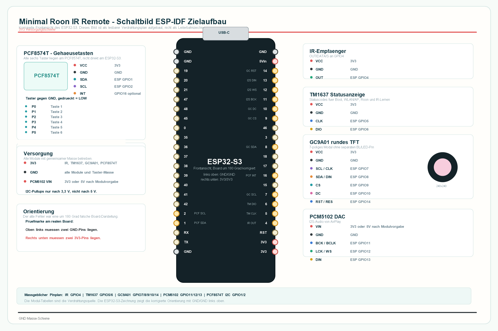

Firmware installieren
Verbinde MRIRR per USB mit diesem Computer. Die Installation erfolgt direkt im Browser.
Das Factory-Image ist noch nicht fuer Tests freigegeben.
Systempruefung
- Sichere Verbindung
- -
- Serieller Browserzugriff
- -
- Firmwarefreigabe
- -
Unterstuetzt werden aktuelle Desktop-Versionen von Chrome und Edge unter Windows, macOS und Linux.
Installation in vier Schritten
Ein USB-Datenkabel und ein kompatibler Browser genuegen.
- 1USB verbinden
MRIRR direkt mit dem Computer verbinden.
- 2Installer starten
Installieren waehlen und den seriellen Anschluss bestaetigen.
- 3Firmware schreiben
Das USB-Kabel waehrend des Vorgangs nicht trennen.
- 4WLAN einrichten
Nach dem Neustart den gefuehrten Netzwerkdialog abschliessen.
Recovery mit BOOT und RESET
Nur erforderlich, wenn der ESP32-S3 nicht automatisch erkannt wird.
- BOOT gedrueckt halten.
- RESET kurz druecken und loslassen.
- BOOT loslassen.
- Den Installer erneut starten.
Vollstaendiges Loeschen entfernt WLAN-, Roon-, Slot- und IR-Einstellungen.
Firmwaredateien
Factory fuer Erstinstallation und Recovery, OTA nur fuer bereits installierte Geraete.
Hardware und Verdrahtung
Referenzaufbau mit ESP32-S3, PCM5102, GC9A01, TM1637, PCF8574T und IR-Empfaenger.

Schaltbild oeffnen